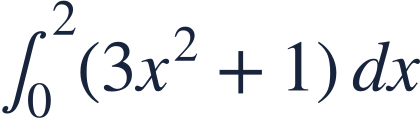
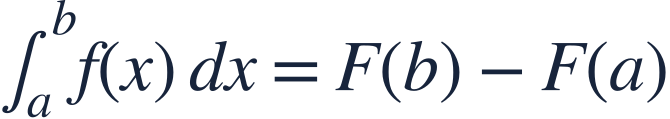
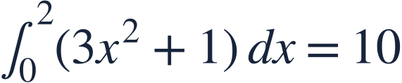
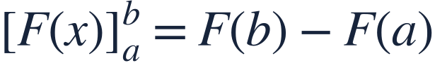
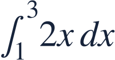

Evaluating with the fundamental theorem
기본정리와 정적분

The Fundamental Theorem turns a definite integral into an endpoint calculation.
미적분학의 기본정리로 정적분을 끝점의 차이로 계산합니다.

The Fundamental Theorem turns a definite integral into an endpoint calculation.
미적분학의 기본정리로 정적분을 끝점의 차이로 계산합니다.
The integrand is continuous, and F must be an antiderivative on the interval.
피적분함수는 연속이고 F는 구간에서 그 함수의 원시함수여야 합니다.

Accumulation is the change in an antiderivative between the two endpoints.
누적량은 두 끝점 사이에서 원시함수가 변한 양입니다.
Choose one antiderivative; a constant cancels in the difference.
원시함수 하나를 고릅니다. 상수는 끝점의 차에서 없어집니다.
Subtract lower-endpoint value from upper-endpoint value.
위 끝점 값에서 아래 끝점 값을 뺍니다.

The integrand is positive, so the accumulated value should be positive.
피적분함수가 양수이므로 누적량도 양수인지 점검합니다.

Evaluate the antiderivative at endpoints, not the original integrand.
끝점에 대입할 것은 피적분함수가 아니라 원시함수입니다.

Use an antiderivative and both endpoints.
원시함수와 양 끝점을 사용하세요.